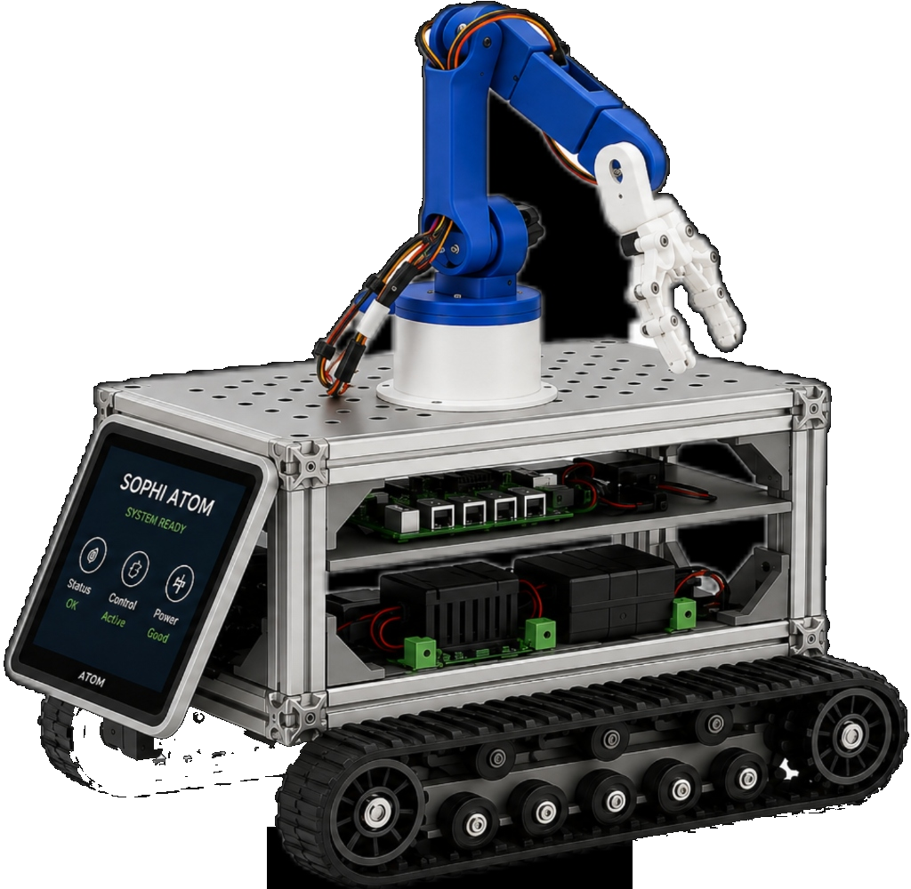

课程对象
高一至高二，适合愿意把 AI、代码、硬件和产品表达放到同一个项目里验证的学生。
12天，从一句 Prompt 到一台会跑、会看、会响应的智能机器人

高一至高二，适合愿意把 AI、代码、硬件和产品表达放到同一个项目里验证的学生。
12 天，完成从真实需求、结构打样、控制开发到技术答辩的闭环。
连接信息科技、通用技术、研究性学习和校内科创项目，不把大学课硬塞给高中生。
说清问题 → 约束输出 → 生成草案 → 实物验证 → 记录取舍 → 迭代发布。
AI 负责生成草案和代码片段，学生负责目标、约束、机理解释、测试和最终取舍。
移动底盘、电机控制、传感器、网页控制、AI 视觉语音、数字孪生和测试报告。
Prompt、仿真、实测、故障日志、Token 记录和复盘持续回流。
实物机器人、控制网页、开源仓库、技术报告、演示视频和个人 AI 助手 Skill。
2.4 / Senior Program
课程不追求概念堆叠，而是让学生用 AI 把一个可运行、可解释、可复盘的移动机器人项目做出来。
面向高中阶段的时间、知识基础和升学材料要求设计。内容对接信息科技、通用技术、研究性学习、综合实践、校内创新项目和科技社团，强调过程证据，不承诺竞赛或申请结果。
北京更关注 AI 通识、科创实践和高校资源衔接；宁波有港口物流、智能制造、园区服务和机器人应用场景。课程把这些转成校园巡检、自动配送、导览服务和无障碍辅助等可做任务。
不把机器人拆成孤立知识点，而是按真实工程链条推进：问题定义、系统架构、软硬件开发、测试验证、文档开源和路演答辩。每一步都有交付物和评价标准。
02 / Capability Map
用一个项目同时训练 AI 全栈开发工程师和 AI 产品经理的核心判断。
能把真实场景转成 PRD、用户流程、功能优先级、验收指标和风险清单。
能看懂底盘、电机、传感器、主控板、BOM 成本和交互体验之间的关系。
覆盖前端控制台、接口协议、MQTT/WebSocket、AI Agent、嵌入式固件和数据日志。
完成移动控制、避障、视觉/语音指令、路径任务、数字孪生和异常回退。
保留 Prompt、Token、Git Commit、测试数据和修改记录，证明不是复制 AI 答案。
03 / 12-Day Program
每天按“任务、工具、证据、复盘”推进，保证学生知道自己做了什么、为什么这样做、哪里由 AI 辅助、哪里由自己判断。
| 主题 | 上午内容 | 下午内容 | 核心工具 | 交付产出 |
|---|---|---|---|---|
|
1
真实场景与问题定义
|
|
|
DeepSeek / Qwen / Kimi / 飞书文档 / 资料核验 | PRD v0.1、场景证据表、问题优先级矩阵、AI 使用记录表 |
|
2
产品架构与AI提问
|
|
|
VSCode / GitHub / Gitee / Mermaid / 飞书看板 / Prompt 模板 | PRD v1.0、系统架构图、Agent 任务树、仓库脚手架、首次 Commit |
|
3
底盘结构与制造约束
|
|
|
sophicar.com / Fusion 360 / Tripo 3D / DFM 检查表 | STL/STEP 文件、结构决策矩阵、DFM 检查表、设计变更记录 |
|
4
数字制造与BOM
|
|
|
Cura / PrusaSlicer / 3D 打印机 / 激光切割机 / BOM Agent | 物理底盘 v1、BOM 表、制造日志、加工偏差记录、成本取舍说明 |
|
5
嵌入式与底层控制
|
|
|
ESP32-S3 / Wokwi / VSCode / Arduino / 万用表 | 引脚表、Wokwi 仿真、底层控制固件、第一次运动测试日志 |
|
6
运动学与传感器
|
|
|
MaixCAM-Pro / IMU / 编码器 / 超声波 / 逻辑分析仪 | 运动学说明页、FSM 状态图、传感器读数表、避障测试日志 |
|
7
AI全栈控制台
|
|
|
HTML / CSS / JavaScript / MQTT.js / WebSocket / Chrome DevTools | 控制网页源码、接口说明、无线控制演示、延迟与丢包测试表 |
|
8
视觉语音与AI动作协议
|
|
|
Qwen VLM / DeepSeek-VL / YOLO / MaixCAM-Pro / Web Speech API / MQTT | 动作 JSON 协议、VLM Prompt、端云控制代码、准确率和延迟测试表 |
|
9
数据面板与数字孪生
|
|
|
Three.js / Chart.js / WebSocket / MQTT / 遥测 Agent | 数字孪生网页、遥测数据日志、虚实联动协议、异常数据分析页 |
|
10
路径任务与场景验证
|
|
|
OpenCV / YOLO / MQTT / 测试场地 / 飞书表格 | 场景任务脚本、路径测试报告、成功率统计、最终优化清单 |
|
11
系统联调与作品集
|
|
|
Git / GitHub / Markdown / 飞书文档 / 剪映 / Token 记录表 | 开源仓库、技术报告、AI 协作与 Token 记录、个人 Skill、3 分钟演示视频 |
|
12
路演答辩与后续路径
|
|
|
路演 PPT / 实物场地 / 评估量表 / 开源仓库 / 演示视频 | 答辩视频、项目评估报告、后续迭代清单、结营证书、可带走机器人 |